Using these pages to document the loot I've collected on my adventures and expeditions. What they will be, that is too early
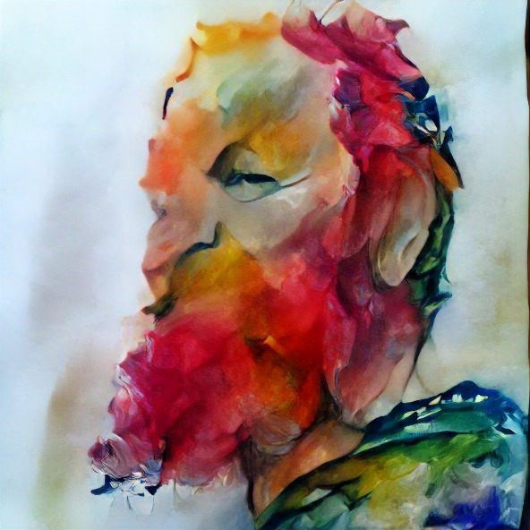
Augmented Intelligence Selfie
10 Things I Love
My kids to bits and Pia, their mother, because it is the only thing that matters.
Data and statistics because of the beauty they behold.
Emacs and keyboard mastery because they reflect the lost art of steep learning curve UX. Although, not entirely certain about this item.
Slide show presentations. For far too long, slide show presentations have they been misunderstood and abused.
Jokes, much like unexpected and novel ideas, art or philosophy. Essentially the same thing, really.
Nonfiction. Including fiction to this, as it is a factual representation of our inner existence.
Lisp programming because of its minimal aesthetics and ease of typing.
8-bit computers, as such is my age.
Annoying music as non-annoying music drives me mad.
Borges, as also he was a friend of recursion.
10 More Things I Enjoy
Emotions, they are 70% of what we actually mean.
Multiple perspectives, otherwise all would be flat.
Journalism, as it can, in fact, also be used for good.
Systems, be they techical, ecological, psycological or artistic, they are as attractive as they are brittle.
Maps in the wi(l)dest sense of the wo(l)rd.
Looking people in the eyes regularily as it is the only way we can feel what they feel.
Randomness, it helps us discover more interesting patterns.
Hacking teams and groups of people because when it succeeds it can bring joy to all involved.
Youtube, for it offers all the lectures we will ever need.
Reading and writing lists, as lists, one suspects, are the true reason we made the leap and started to read and write; to remember, not to express.
I am Sami Rafael Kallinen and you can find me at @sakalli
Bitcoin Butterfly
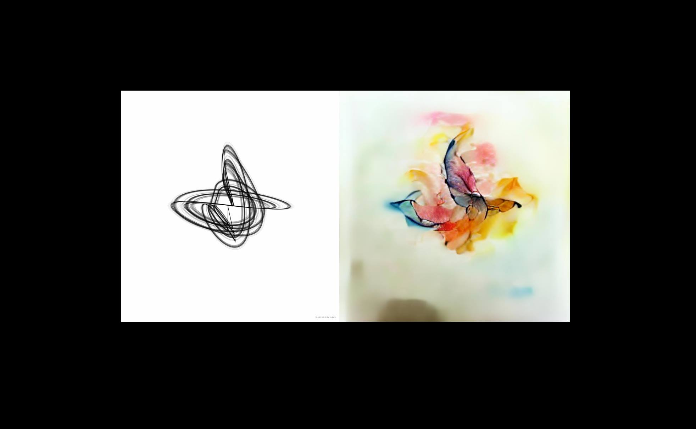
This is a function written in Clojure and quil. For 12 hours on Monday 20 September bitcoin market fluctuations controlled its evolution in real-time. This charcoal drawing-like image (a snapshot) was then fed into a GAN, which transforms it into a butterfly engulfed in watercolour flames.
A Fascinating GAN
Have you heard of Twitter, a fascinating generative adversarial network? Simply type a text into the prompt, and it will begin to generate content that is mostly realistic. Surprisingly logical. It is, however, not yet very stable. It has a tendency to devolve into racism and other forms of bigotry.
Cognitive Dependancy Graph
"Cognitive dependency graph," mm, I'm not sure if I coined this meme, but it appears to be a useful mental model for thinking about all the parts you need to know and absorb before you can comprehend something.
Especially when it comes to considering the complexity you bring when writing libraries, for example. You should be cognizant not only of the concrete system/code dependencies you impose, but also of the cognitive dependencies you introduce.
Ironbeach
Ironbeach, Jussarö. Photo: sakalli
Current view
Photo: sakalli
Mind Portal
Stumbled on this note in one of my notebooks from 20-25 years ago.
Photo: sakalli
Thrill of Reading Assembly
Go Knuth! "/.../we can recognize some of [programs] as genuine works of art. I can still remember the great thrill it was for me to read the listing of Stan Poley's SOAP II assembly program in 1958;" <3
Sci-fi Selfie
Photo: sakalli
SciCloj - How to build a Clojure Data Science Community
Talk about community building within SciCloj
Sprint
Doodle: sakalli
Legos in the Office
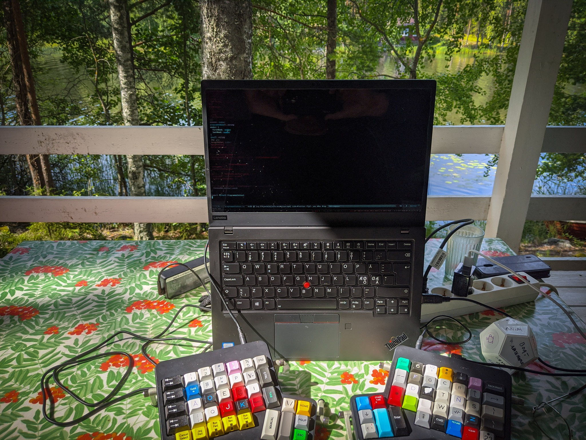
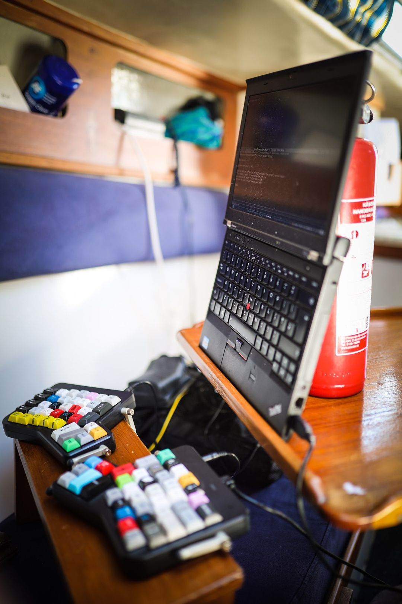
Photos: sakalli
Life Goals
One of my life goals is to make simply one great slide. A presentation with only one slide, but a fantastic one. A revolution will be sparked by it.
Tel Aviv (Star Wars)
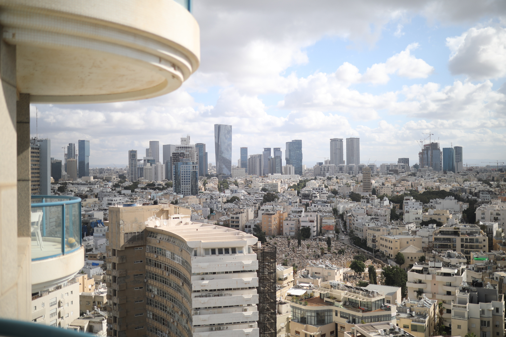
Photo: sakalli
A Holy Book
Photo: sakalli
Wire Magazine Best of 2019 Artists
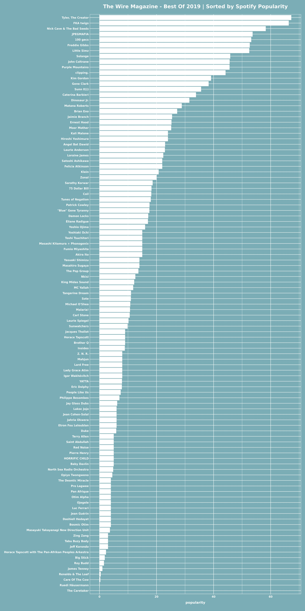
Artists featured in Wire's best of 2019 list organized by Spotify popularity, or mainstreamness, if you will. Plot by sakalli.
A Job Advert
Job advert for KSF Media. Concept and production: sakalli & Karri Niinivaara
It's the Empathy
Despite the fact that one of the agile manifesto's primary decrees was "people over processes," it's surprising how often scrum folks and their friends forget about the people. Not only in terms of emphasizing process too much, but also in terms of overlooking the 'human' component of the equation. We've been doing daily standups with a variety of competences and organizations for a long time, and it usually does work, but not for the reasons most people might believe. Of course, having a platform where problems emerge early and knowledge is readily shared is beneficial, but it may not be as vital as one might think.
What matters is that we are required to face each other and look our coworkers in the eyes at least once a day, as it fuels the empathy-building processes. Empathy is the special sauce that lets communication flow and avoids misconceptions that plague all teams and organizations. So keep doing your standups, no matter what you're talking about, as long as it's engaging and interesting to everyone.
We have a scoop going on that few are writing about. A big robbery of tens of millions of euros is now taking place, but before we get into the details of the robbery, I need to discuss a few principles.
Most people have heard of Bitcoin. It is a decentralized currency that has been discussed in recent headlines. Blockchain is a term that some people are also familiar with. It is the technology behind Bitcoin's notion. Essentially, a decentralized database, or a list of transactions shared by numerous users.
The whole idea is that instead of a bank controlling the list of transactions, they have a common list that is constantly updated with clever mechanics and where encryption technologies are leveraged to trust that the transaction is correct even though the list is not owned by anyone. The concept could serve as a springboard for future breakthroughs that have the potential to transform our world in the same way that the internet did in the last two decades. For instance, it has the potential to alter structures for how we organize ourselves in the future, as well as a variety of other phenomena that touch us all.
Then there's Ethereum, which has been dubbed "Bitcoin 2.0". Ethereum is built on the concept of a blockchain, but instead of transactions, it also stores code and rules on a shared list or ledger. Smart contracts are what they're called. Ethereum has its own currency, called Ether, but that is not the main point. The value of one Ether in exchange markets this morning was roughly 18 euros.
In fact, Ethereum may be thought of as a massively distributed computer on which programs can be run for a small fee in
The primary idea behind Ethereum is that it allows you to set precise rules that can, for example, apply to the transfer of money when specific circumstances are met. Contracts that are similar to traditional contracts but are written in code. The theoretical implications for such a structure are intriguing.
So now to DAO, or Decentralized Autonomous Organization. DAO, an Ethereum application (or contract), that was launched in April. It's a 600-line piece of open source code that does something like this: Interested individuals can invest money (Ether) in DAO for a limited time. It's similar to Kickstarter, the crowd-funding platform, but it's decentralized. People can suggest how the money should be spent after the investment phase, and everyone who has invested decides.
The DAO was a huge success. By May 21, over 11,000 "investors" had contributed over $ 150 million to the project.
It is thus up to the investors to decide how the money is spent, whether it is for thousands of little projects or one massive project. Because the participants are mostly nerds, it's assumed that the projects could be about space exploration or other science or technology-related topics.
Screenshot from Kraken.com
I imagine sociologists to be enthralled by what is taking place. Because this is absolutely unregulated, it is entirely feasible that these investors will decide, for example, to invade an impoverished country, with nothing stopping them from spending the money to do so. It would hardly be surprising if you've been following what's been going on in boards like Reddit or 4Chan. The amount in DAO this morning (17.6) was approximately $200 million, which is plenty for a small invasion.
Now for the heist. Someone has uncovered a bug in DAO and is now exploiting it to siphon money from the system. Hundreds of millions are vanishing. Ether's value has plummeted by nearly half, and the situation remains volatile. The DAO and Ethereum development communities are attempting to save the day, but only time will tell if they succeed. It'll be fascinating to observe how the community reacts as a whole.
This day will undoubtedly go down in history as a watershed moment in digitisation, but for some reason, the scenario is covered by a number of traditional media outlets.
As I write this, Twitter says that the Ethereum team has saved the situation by doing a so-called soft fork, in which Etherium is branched to remedy the problem. The money is safe once more - for the time being. But this isn't the last time we'll see something like this.
Although the uninitiated may be forgiven for not being aware of automation and robotisation, the topic has recently received more attention, and rightfully so. Right now, machine learning is happening. Artificial intelligence and its sibling, machine learning, are being used to automate an expanding number of tasks that were previously performed manually. All of this is made possible by the use of previously unseen data volumes.
The majority of this data is currently consolidated and in the hands of a few key Silicon Valley players. And this data centralization, which is the lifeblood of machine learning, has attracted an incredible number of the world's top machine learning researchers — the industry's actual superstars — who have been plucked from universities by businesses like Facebook, Google, and Microsoft in recent years.
As a result, these corporations are driving research and development in this field, which is a potentially precarious situation. How do we know we can trust these organisations when there is such a concentration of power through technology?
Dan Lyons, a tech journalist and writer, shares the story of his adventures working for Boston-based start-up HubSpot in his recent book "Disrupted: My Misadventure in the Start-Up Bubble." He portrays a rather terrifying picture of Silicon Valley: shallow, pubertal, and cynical and irresponsible at the same time.
Of course, Lyons' portrayal can be questioned. He may have an axe to grind, and he clearly does, but if the picture he paints is at all accurate, it is reasonable to be concerned about whether such a culture is capable of managing any data, let alone the data of all humanity.
Of course, we may always refuse to share our data with these organizations, but it isn't a very satisfactory solution. First and foremost, denying may no longer be practicable or even feasible, but what if this information could be used for good? Might we miss important groundbreaking opportunities if we close that door? What about, for example, more exact diagnoses at the doctor's office or more fair judicial judgements in the future, as a result of these advances and this data.
We might, indeed, need this type of artificial intelligence for all of our futures, but we also require some assurance and mechanisms that our data ownership and control, and hence our privacy, will not be jeopardized.
Researchers are, in fact, experimenting with ways for services to apply machine learning to your data without having to see it. The term "homomorphic encryption" refers to a method of protecting data from prying eyes. Only those with a key to view the data can also view the results of the calculations performed on it. This is one model among several that could safeguard us from unethical businesses, but it will be some time before such solutions are ready for use.
While we wait, we might want to be especially vigilant about the ethics of the people with whom we entrust our data.
This post was edited to make it more readable in 2021.
"Yle reached two significant milestones last week. The first was the fact that we published a new browser version of our Web TV and Radio player Yle Areena; users are now greeted with a more modern service, but perhaps more importantly they will also encounter the first steps towards an actual personalised service. This moment was also of huge symbolic significance for the organisation since it meant that practically all of our applications and clients for Yle Areena are now running on top of our new API architecture." continue reading here
Central Node Is Down
We had five generations walking this earth at the same time when the teenager was born, we buried our beautiful gran today, and now it's just me and the monsters remaining of my mother's direct line. This is a very well-coordinated group. I'm missing them all. In so many ways, this lovely person has held the now-large family together. In ways that no one fully appreciated at the time, partly because she never asked for praise or thanks, and partly because she ran on 100% kindness. There is a problem with the core node. Photo (May 30, 2009): sakalli
Short TV spots, where culture is found in unexpected places, for a Yle Radio arts and culture program. The marketing department banned the bible version and did not air it. First spots aired in Finland that utilized Canon SLRs (5d mk2). Script: Sebastian Bergholm, direction & editing: sakalli. DP: Petteri Lappalainen.
The Weeping Gallery, Sami Kallinen's video installation until 7.1. at the Taidehalli gallery (Nervanderinkatu 3). Tue-Fri 11-18, Wed 11-20, Sat-Sun 12-17.
"VISUAL ARTS. Amsterdam-based artist Sami Kallinen (b. 1972) grabbed a video camera while his mother was lying in Turku, 1389 kilometers away, struggling with a serious illness. He decided to shoot a short clip of the view from his home window every day.
Autumn trees photographed from a window are combined with pictures of people grieving in Kallinen's two-part video installation in the Taidehalli gallery. However, because the images are on opposing walls of the area, you must choose which to look at. There are two ways to face grief.
Autumn trees photographed from a window are combined with pictures of people grieving in Kallinen's two-part video installation in the Taidehalli gallery. However, because the images are on opposing walls of the area, you must choose which to look at. There are two ways to face grief.
You can take part in the crying yourself: Kallinen collects videos of real crying situations at www.weepingallery.net, from where they are sent to the exhibition.
We are not used to looking at the open expression of grief from strangers. It can be experienced in different ways, embarrassing or liberating, depending on your own emotional state. Crying can also be a unifying experience, as weeping women or crying walls say.
The days of anxiety depicted in the window, accompanied by music played by Kallinen, however, take precedence over the piece. The slight unevenness of the window glass softens the image and makes the everyday outside world feel unreal and unattainable. Such is the world in the midst of great sorrow."
Some Opening
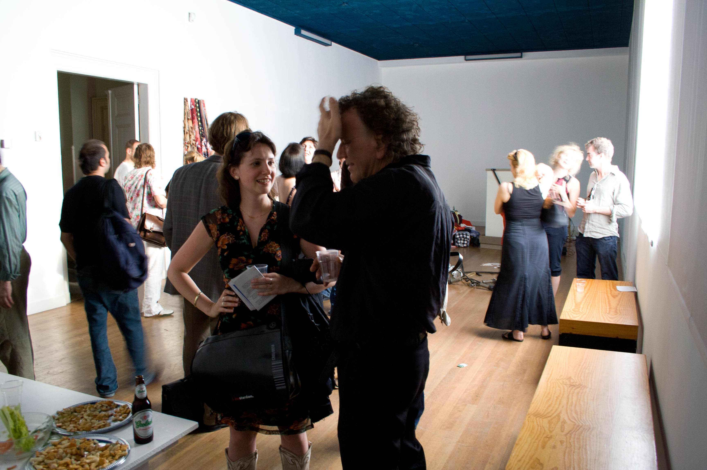
Nederlands Instituut voor Mediekunst, Amsterdam. Photo: sakalli
Filming footage for a multi channel video installation Flow. Photo: sakalli
Behind the Scenes 1
An every day installation
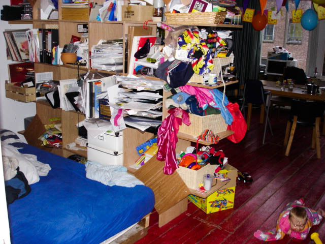
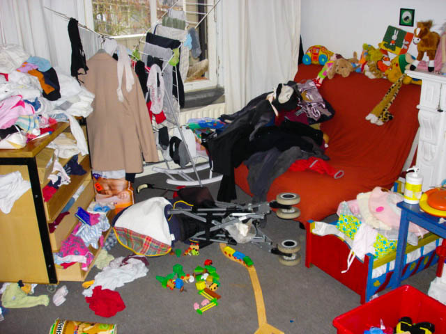
Amsterdam. Photo: sakalli
Close
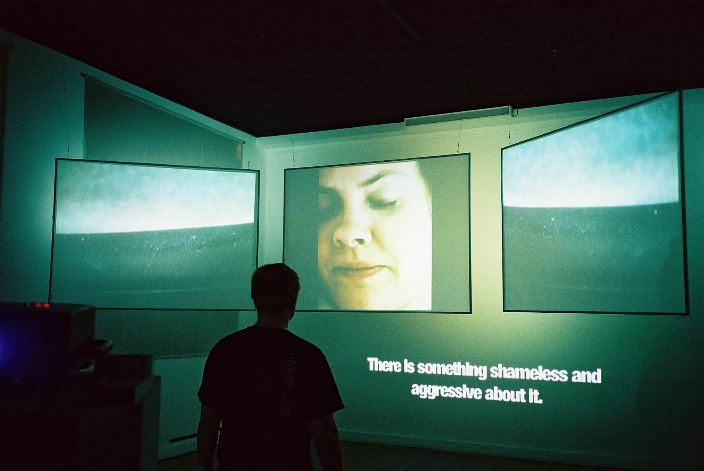
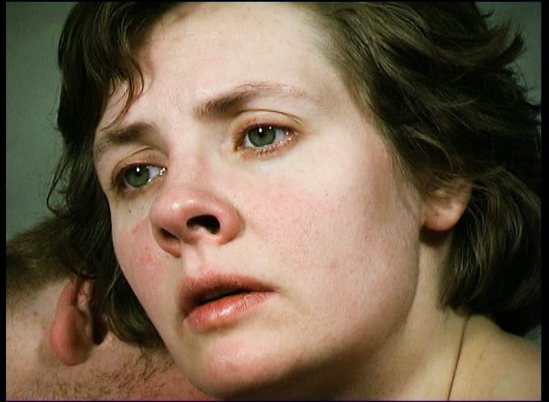
Multi channel video installation exhibited in Kluuvin Galleria 22.10. - 7.11.2004.
The Juggler
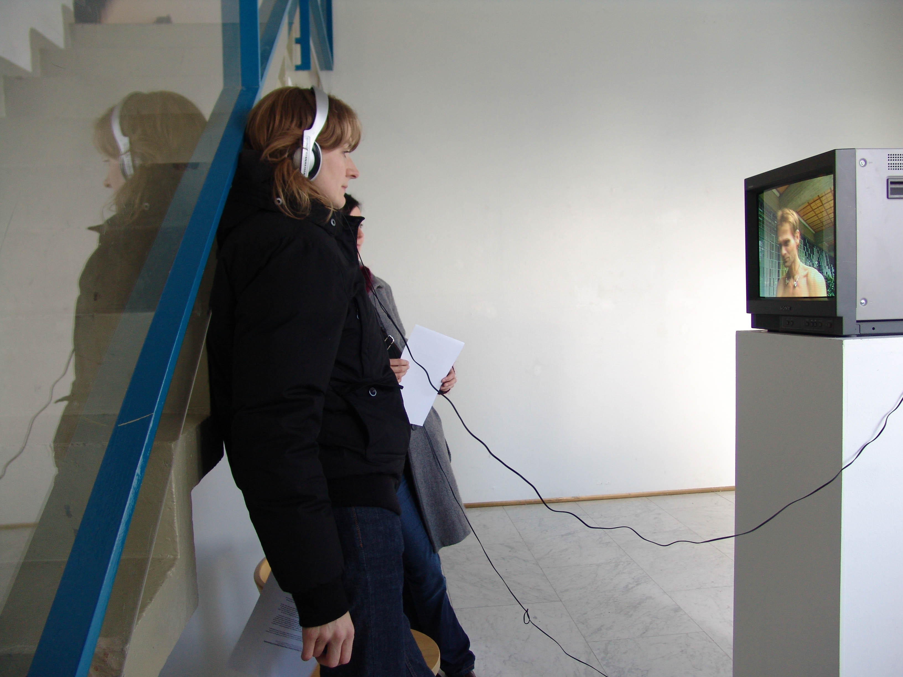
The Juggler (2003) documents the inner life of a street juggler, a urban hermit, who now practices each day at the front of the Dutch national bank. Still from the exibition at Kluuvin Galleria in 2004.
Amsterdam
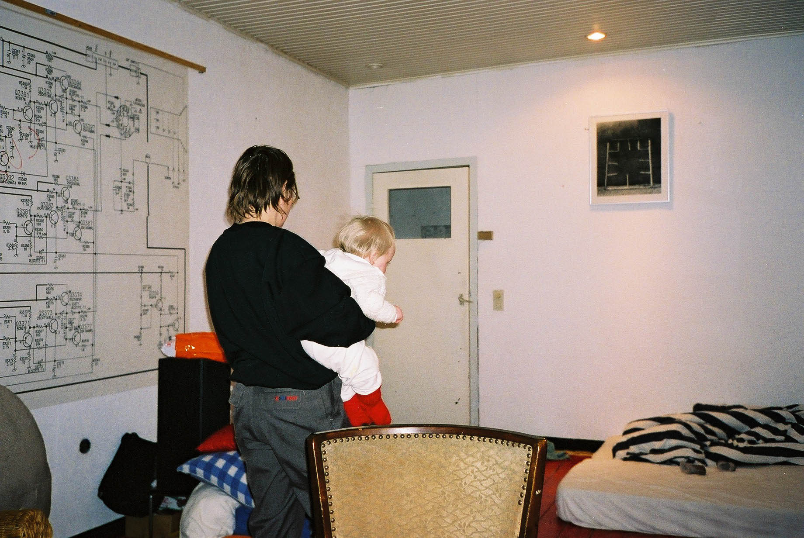
Home. Schematic of a television. Photo work on the wall by Maria Ylikoski. Photo: sakalli
Cannes
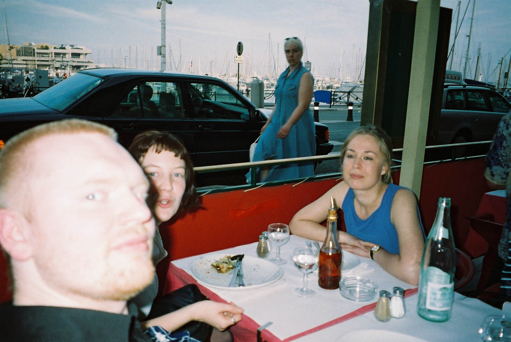
Charlotte Pruth and Josefine Adolfsson. Photo: sakalli
Rotterdam
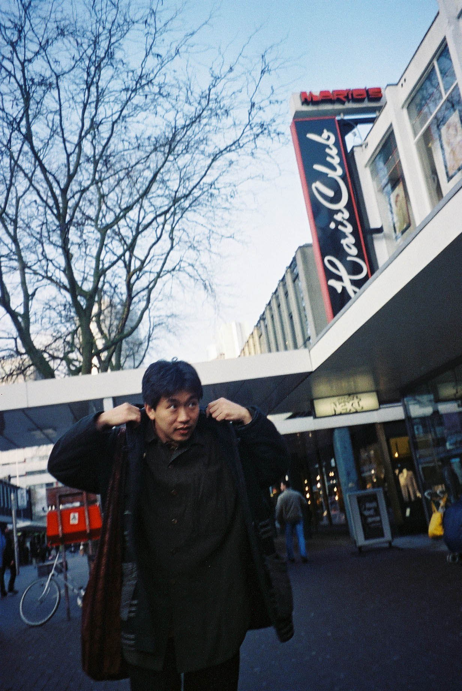
Hirokazu Kore-eda in Rotterdam in 1998, after I interviewed him about his film After Life. Photo: sakalli